Ozon ID
Ozon ID — сервис для авторизации на маркетплейсе по номеру телефона.
Система создаёт Ozon ID автоматически при регистрации аккаунта. Войти в учётную запись можно одним из этих способов:
- по номеру телефона: введите его и одноразовый проверочный код — это может быть код из СМС или последние шесть цифр номера, с которого поступил автоматический звонок
- по электронной почте
- через Госуслуги
- с помощью отпечатка пальца или сканирования лица в приложении на смартфоне
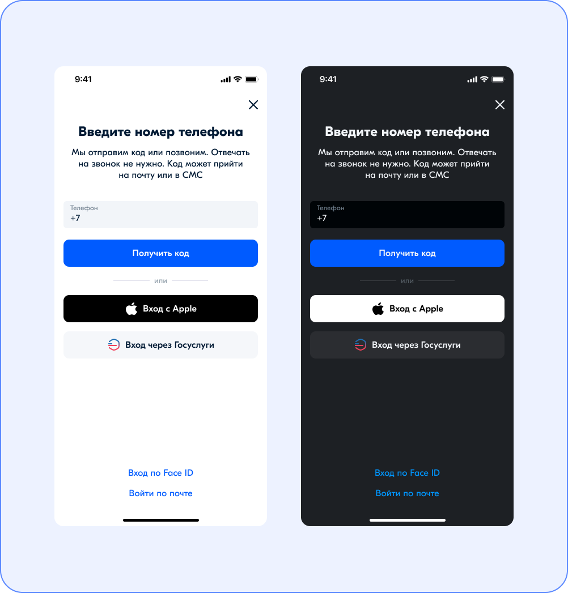
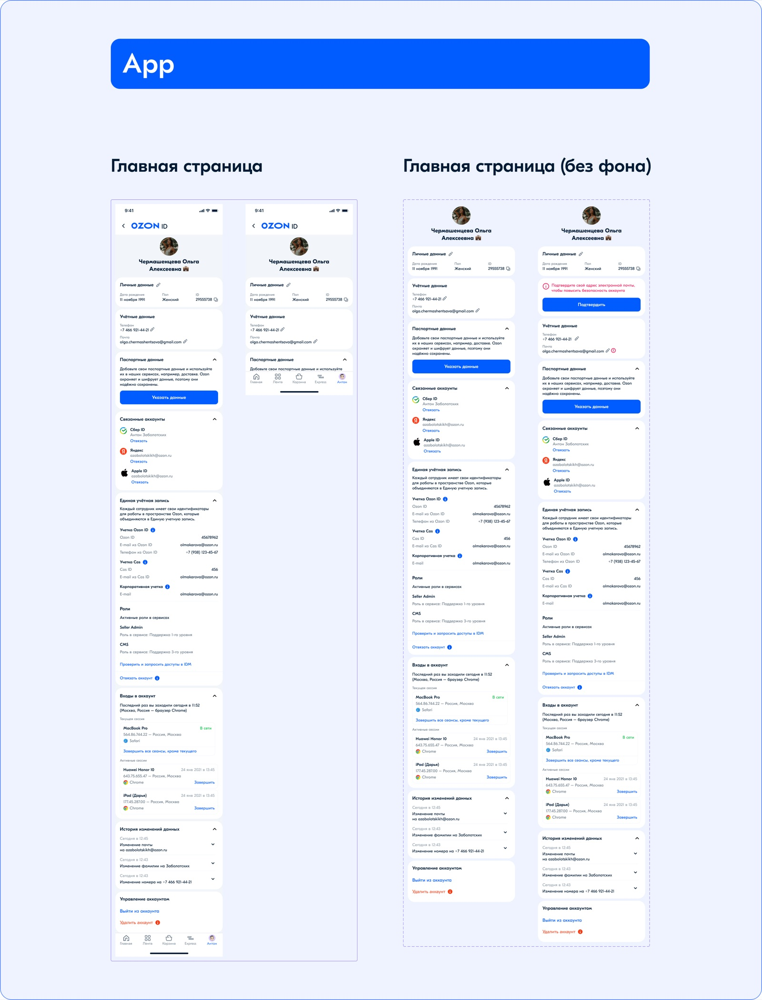

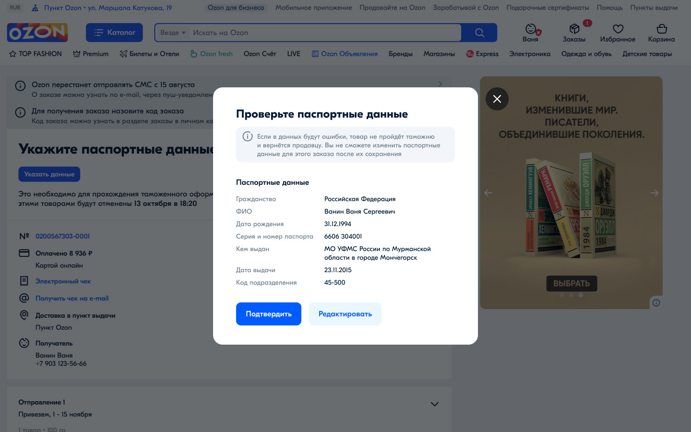
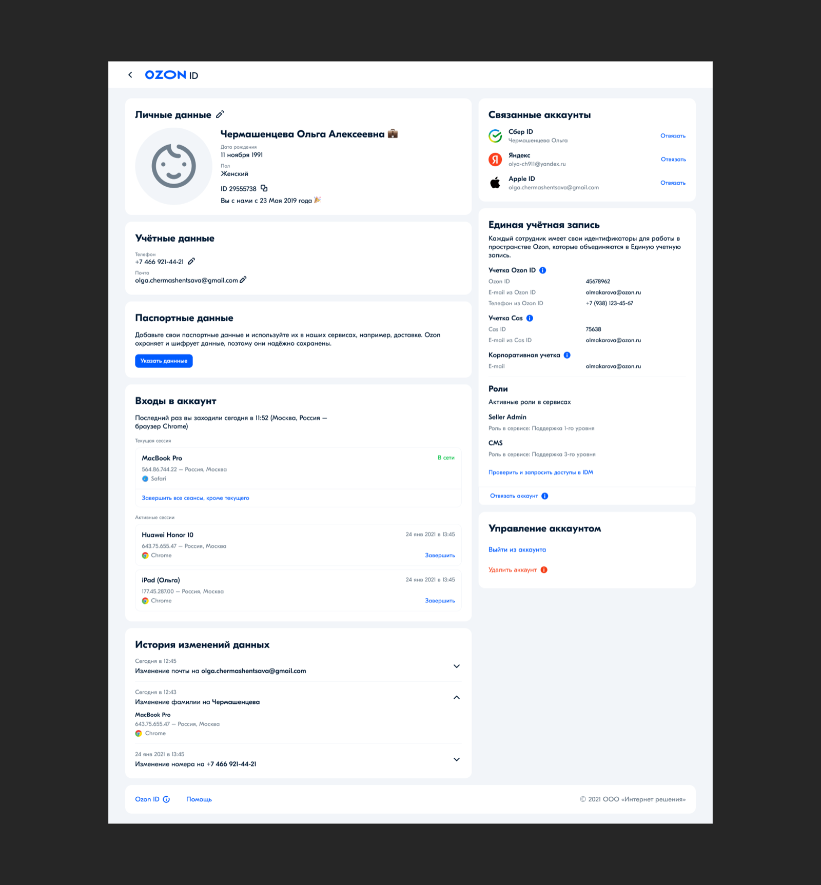
Подробнее о способах авторизоваться можно прочитать в этой статье.
К одному Ozon ID можно привязать несколько личных кабинетов.
Такой подход хорош тем, что:
- вам не нужно запоминать логин и пароль;
- данные надёжно защищены, поскольку доступ к аккаунту сможет получить только владелец телефона.
CHS Admin
Система администрирования и автоматизации онбордингов (системы подсказок).
Данная ERP позволяет менеджерам гибко настраивать систему подсказок в своём продукте, при этом не перегружая интерфейс и анализируя создаваемую нагрузку на пользователя. Так например система не даст сделать сразу модальных окна при попадании пользователя на главный экран, но при этом разрешит использование тултипов и одной модалки в рамках текущей сессии. Это в целом делает информационную архитектуру более прозрачной и предсказуемой для владельца продукта, а пользователь сможет комфортно взаимодействовать с маркетплейсом, изредка изучая новый функционал при этом не попадая под шквал модальных окон и других подсказок.
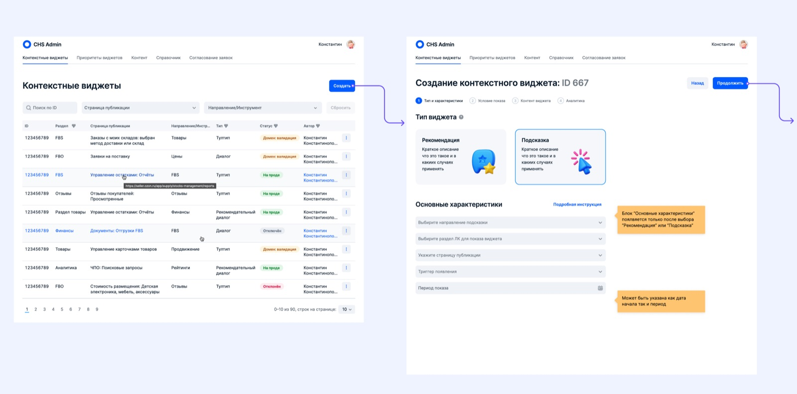
CHS Admin позволяет целенаправленно запускать онбординги и отслеживать их эффективность, калибруя и масштабируя успешные решения.
Помимо прочего, данная ERP-система объединяет различных специалистов и автоматизирует их работу. Так, например, продакт может создать модальное окно, в котором будет показан функционал новой фичи, а редактор подготовит текст и напишет его прямо в интерфейсе CHS. После этого фичу можно будет запустить в продакшн.
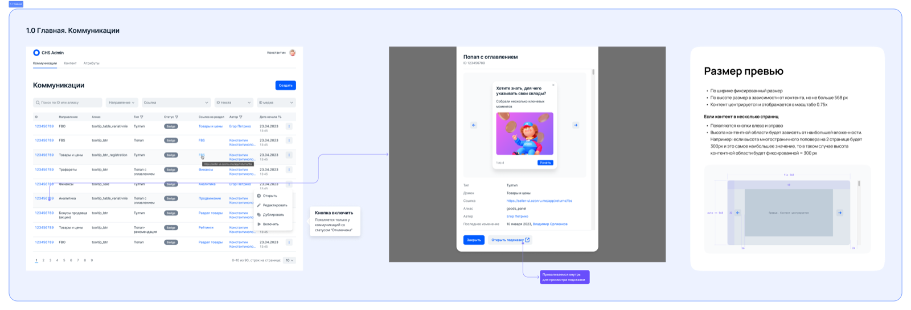
Одна из ключевых особенностей CHS Admin — возможность настройки условий появления подсказок прямо в визуальном редакторе. Теперь для этого не требуется привлекать разработчика, что значительно удешевляет процесс тестирования и вывода в продакшен новых контекстных виджетов. С этой задачей легко справится даже начинающий IT-специалист.
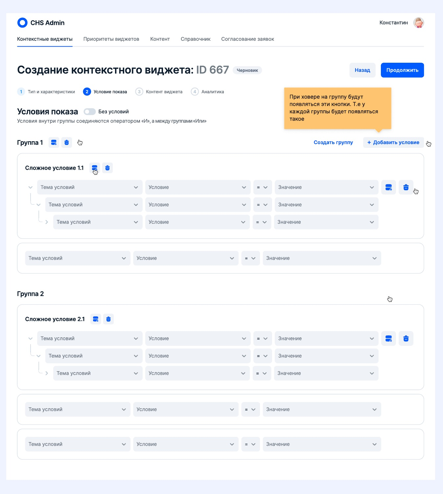
KMS\Education
Инструмент по созданию базы знаний (аналог Notion).
KMS создан для внутренних нужд компании:
• Написания обучающих статей для сотрудников и продавцов
• Хранения и редактирования и публикации информации
• Для последующей продажи цифрового продукта по типу Notion/Buildin
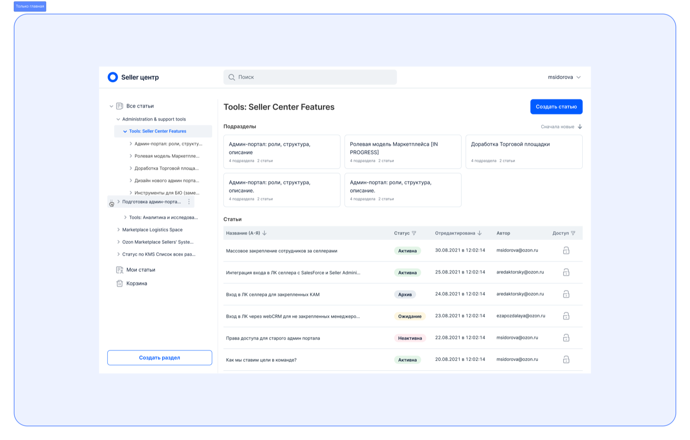
KMS позволяет настраивать ролевые модели с разными правами, а также публиковать статьи материалы как в рамках внуреннего контура, создавая отдельные пространства, так и на внешние площадки для продавцов и пользователей.
Также поддерживается работа с версионированием и бэкапами.
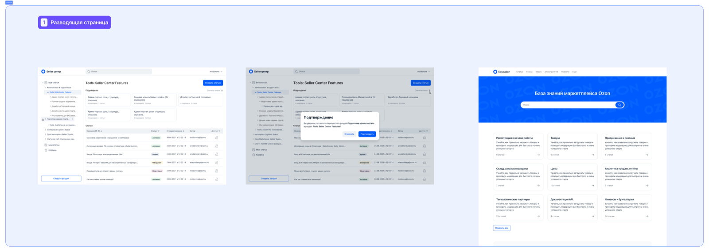


Unity
ERP-система для автоматизации работы с контрагентами
Внутри компании Ozon была разработана ERP-система, которая автоматизирует ключевые процессы взаимодействия с контрагентами. Решение позволило объединить в единой платформе работу с договорами, оплатами, документооборотом и аналитикой.
Система упрощает управление большими объемами данных, минимизирует ручной труд и снижает вероятность ошибок. Благодаря интеграции с внутренними сервисами Ozon обеспечивается прозрачность всех этапов сотрудничества: от регистрации партнёра и проверки данных до контроля выполнения обязательств.
- интеграция с финансовыми сервисами для удобного управления оплатами.
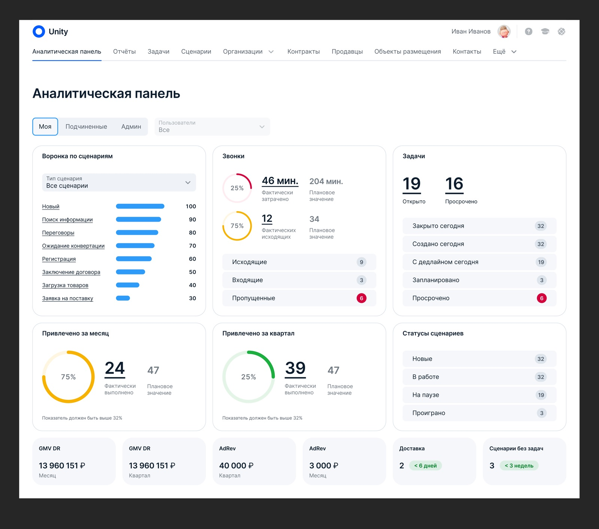
Основные возможности:
- единая база контрагентов с актуальной информацией;
- автоматизированный документооборот (договоры, акты, счета, закрывающие документы);
- контроль сроков и статусов обязательств;
- встроенная аналитика для мониторинга эффективности работы с партнёрами;
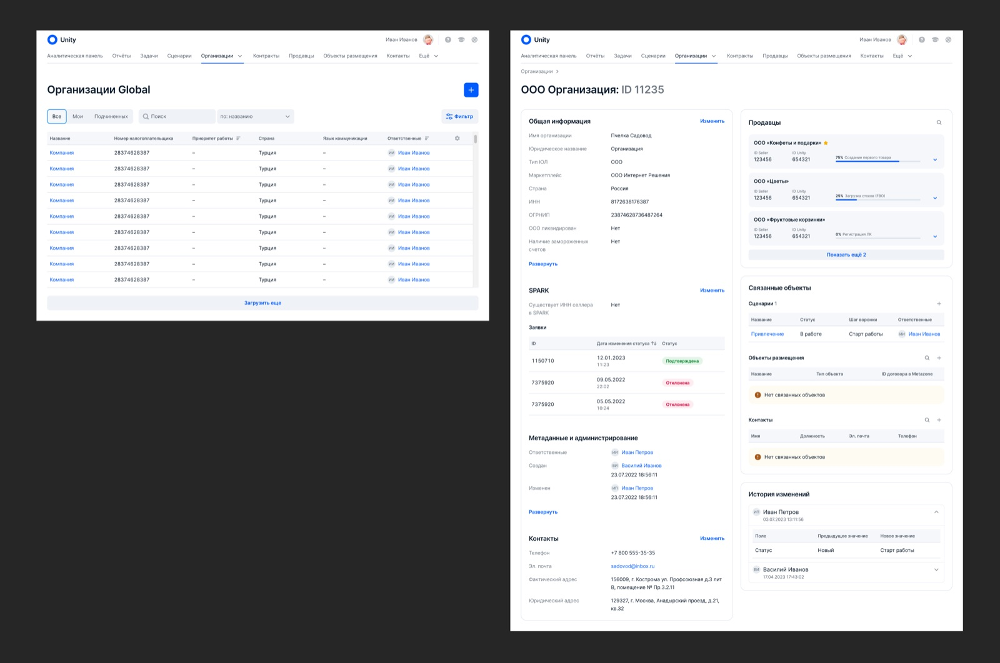
В результате внедрения система помогла значительно ускорить работу отделов, снизить нагрузку на сотрудников и обеспечить более высокий уровень прозрачности при работе с партнёрами.